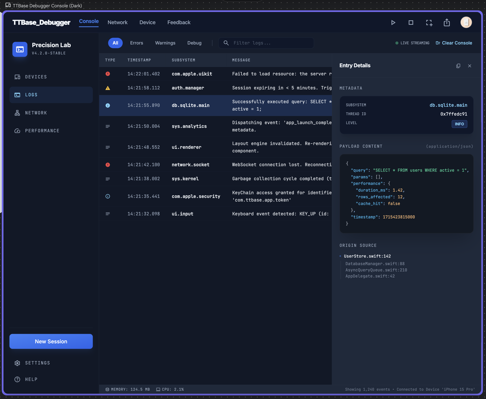
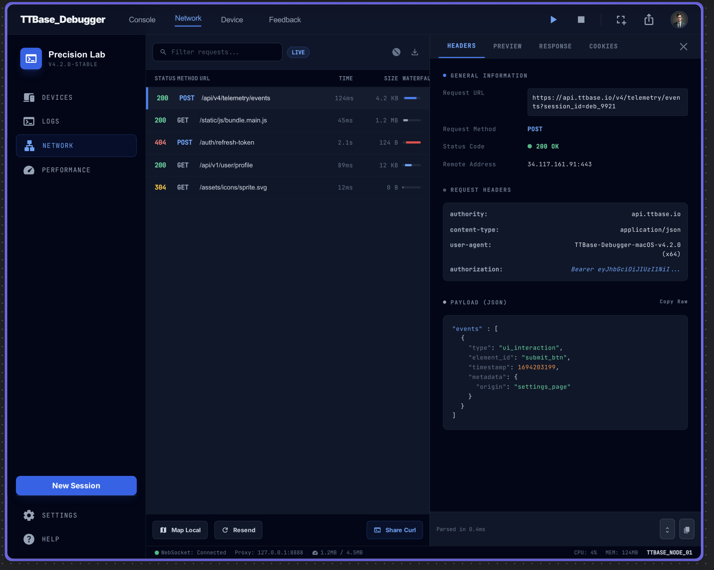
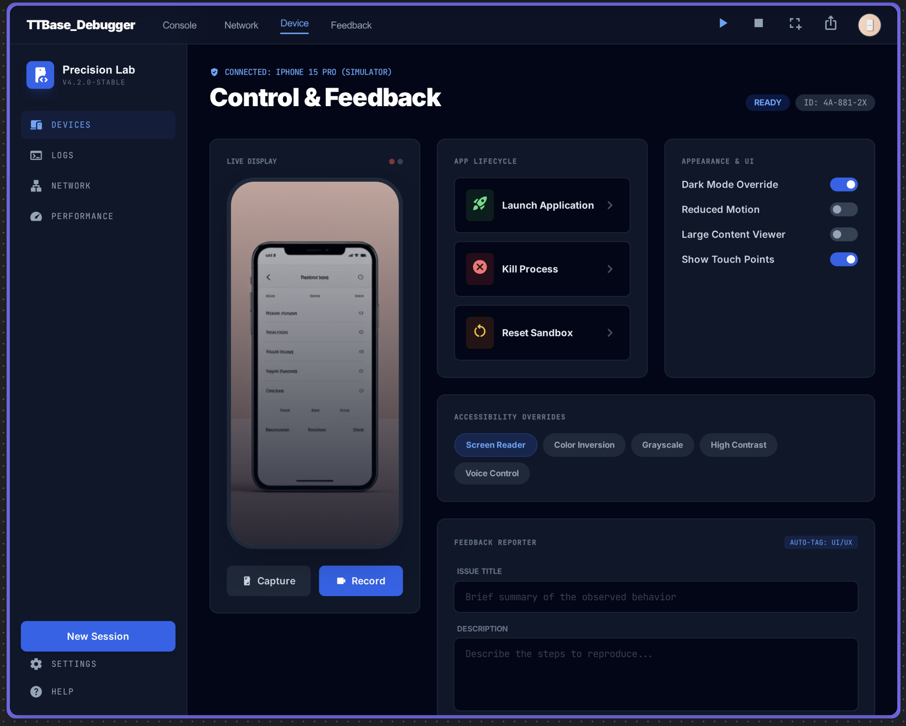
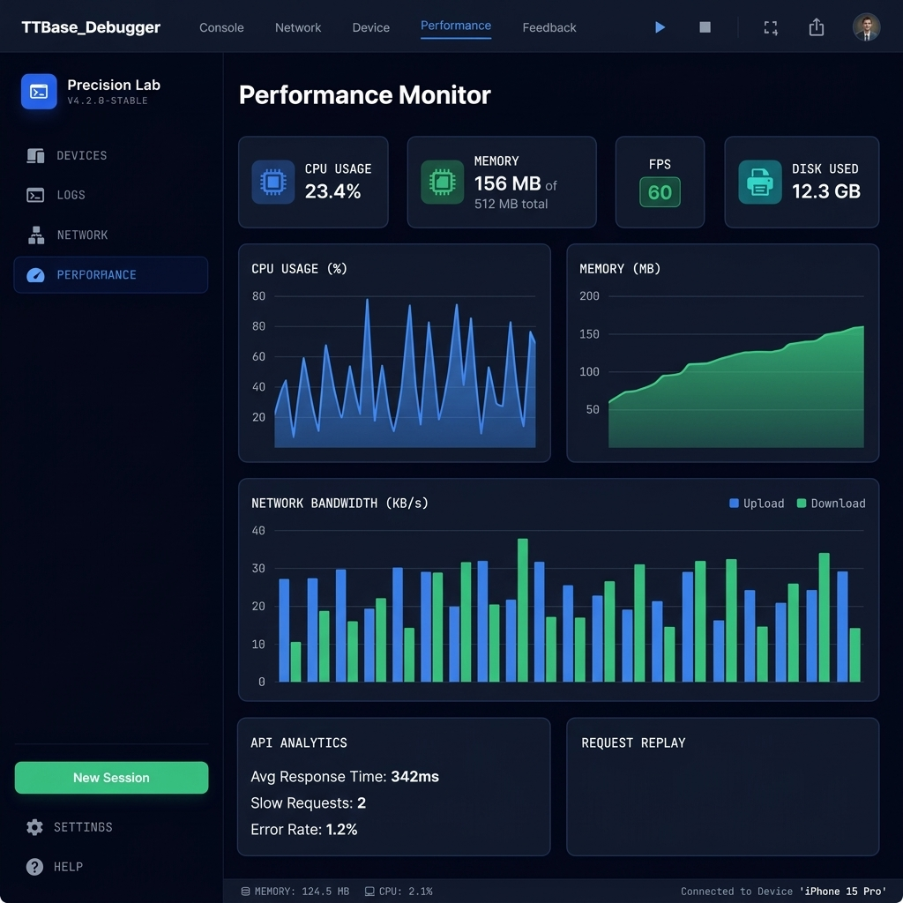

TTBDebugPlus macOS Debugger
A professional-grade macOS companion app for debugging iOS applications in real-time. View logs, inspect network requests, export to Postman, analyze API performance, and manage debug sessions — all from your Mac.

How It Works
TTBDebugPlus uses Bonjour (mDNS) for zero-configuration discovery and WebSocket for real-time, bidirectional communication between your iOS app and macOS.
Powerful Features
Everything you need to debug, inspect, and optimize your iOS applications from macOS.
Live Console
Real-time log streaming- ✓ Filter by level: Error, Warning, Info, Debug
- ✓ Full-text search with highlight matching
- ✓ Click to expand JSON payload details
- ✓ Auto-scroll LIVE mode
Network Inspector v2
Charles Proxy alternative- ✓ JSON Tree Viewer — collapsible nodes, Pretty/Tree/Raw modes
- ✓ Deep Search — filter by URL, Body, Headers scopes
- ✓ Pin/Bookmark ⭐ requests, waterfall timing bars
- ✓ Export as cURL, Postman Collection (v2.1), context menus
- ✓ API Analytics Dashboard — method/status distribution, slowest requests
Device Control
Remote device management- ✓ Remote screenshot capture & recording
- ✓ Toggle Dark Mode, Reduced Motion
- ✓ App lifecycle: Launch, Kill, Reset Sandbox
- ✓ Accessibility overrides
Performance Monitor
Real-time metrics- ✓ CPU & Memory usage charts
- ✓ FPS counter and disk usage
- ✓ Network bandwidth monitoring
- ✓ Slow request & duplicate detection
Feedback Reporter
Bug report workflow- ✓ Create structured bug reports
- ✓ Auto-tag: UI/UX, Network, Crash
- ✓ Attach annotated screenshots
- ✓ Export as Markdown
Export & Share v2
Multiple formats- ✓ Postman Collection v2.1 — one-click import
- ✓ cURL for Terminal replay
- ✓ Session files (.ttbdebug) — share debug sessions
- ✓ Import/Export sessions between team members
- ✓ Context menu: copy URL, headers, body, JSON payload
See It In Action
A professional-grade macOS interface built entirely with SwiftUI. Dark theme, polished UI, zero compromise.
📋 Console View
Real-time log streaming with level filtering, subsystem grouping, and JSON detail inspector.

🌐 Network Inspector
Full HTTP inspection with headers, JSON body, timing waterfall, and cURL export.

📱 Device Control
Remote screenshot, app lifecycle control, accessibility overrides, and feedback reporter.

📊 Performance Monitor
Real-time CPU, memory, FPS charts with network bandwidth monitoring and API analytics dashboard.
iOS SDK Integration
Connect your iOS app to TTBDebugPlus macOS in minutes. The bridge auto-discovers the macOS app via Bonjour — no IP configuration needed.
⚡ Quick Start Overview
Ensure both devices (Mac + iPhone/Simulator) are on the same Wi-Fi network. Auto-connects in < 2 seconds.
Add TTBaseUIKit to Your Project
Add the TTBaseUIKit package which includes the DebugBridge module via Swift Package Manager.
// Swift Package Manager — add to Package.swift:
dependencies: [
.package(
url: "https://github.com/tqtuan1201/TTBaseUIKit.git",
from: "4.2.0"
)
]
// Or add via Xcode:
// File → Add Package Dependencies...
// URL: https://github.com/tqtuan1201/TTBaseUIKit.gitTTBaseUIKit/Support/DebugBridge/
⚠️ Configure Info.plist REQUIRED
iOS 14+ requires local network access declarations in Info.plist.
Missing this step causes "NoAuth -65555" error when NWBrowser attempts Bonjour scanning.
<!-- Add to your iOS app's Info.plist -->
<!-- Required: Describe why local network access is needed -->
<key>NSLocalNetworkUsageDescription</key>
<string>Required for connecting to TTBDebugPlus
on macOS to stream debug logs.</string>
<!-- Required: Declare Bonjour service type -->
<key>NSBonjourServices</key>
<array>
<string>_ttbdebug._tcp</string>
</array>Start the Debug Bridge
Initialize the bridge in your AppDelegate or SceneDelegate.
Always wrap in #if DEBUG to exclude from production builds.
import TTBaseUIKit
// AppDelegate.swift — UIKit
func application(
_ application: UIApplication,
didFinishLaunchingWithOptions launchOptions:
[UIApplication.LaunchOptionsKey: Any]?
) -> Bool {
#if DEBUG
// Start bridge — auto-discovers macOS app via Bonjour
TTDebugBridge.shared.start()
// (Optional) Auto-intercept console logs
LogInterceptor.shared.install()
#endif
return true
}
// Or SwiftUI App:
// @main struct MyApp: App {
// init() {
// #if DEBUG
// TTDebugBridge.shared.start()
// LogInterceptor.shared.install()
// #endif
// }
// }Send API Logs
In your network layer, call sendAPILog to forward request/response data to the macOS app. Data appears in the Network tab with JSON viewer, waterfall timing, and export options.
// In your URLSession response handler:
#if DEBUG
TTDebugBridge.shared.sendAPILog(
method: request.httpMethod ?? "GET",
url: request.url?.absoluteString ?? "",
statusCode: (response as? HTTPURLResponse)?.statusCode ?? 0,
requestHeaders: request.allHTTPHeaderFields ?? [:],
requestBody: String(
data: request.httpBody ?? Data(),
encoding: .utf8
) ?? "",
responseHeaders: (response as? HTTPURLResponse)?
.allHeaderFields as? [String: String] ?? [:],
responseBody: String(
data: responseData,
encoding: .utf8
) ?? "",
durationMs: elapsedTime * 1000,
sizeBytes: responseData.count
)
#endif
// Or use LogInterceptor (if using LogViewModel):
#if DEBUG
LogInterceptor.shared.interceptAPILog(
log, statusCode: statusCode,
method: method, url: url,
durationMs: duration
)
#endifSend Console Logs
There are 3 ways to forward console logs to macOS. Choose the one that best fits your codebase:
// ── Method 1: TTBPrint() — replaces print() ──
// Auto-sends to bridge + prints to console
TTBPrint("User logged in", level: "info", subsystem: "Auth")
TTBPrint("API error", level: "error", subsystem: "Network")
// ── Method 2: sendConsoleLog() — manual ──
#if DEBUG
TTDebugBridge.shared.sendConsoleLog(
level: "debug", // debug | info | warning | error
subsystem: "Network", // module name
message: "User profile loaded successfully",
sourceFile: #file,
sourceLine: #line
)
#endif
// ── Method 3: LogInterceptor — hook existing calls ──
#if DEBUG
LogInterceptor.shared.interceptConsoleLog(
message: "Something happened",
level: "warning",
subsystem: "Analytics"
)
#endifTTBPrint() instead of print() — auto-sends to macOS + prints to Xcode console.
Run & Verify Connection
Ensure both devices are on the same Wi-Fi network, open TTBDebugPlus on Mac, then Build & Run your iOS app. TTBDebugPlus auto-discovers the device within seconds.
// ✅ iOS Xcode Console will show:
// [TTDebugBridge] 🔍 Started browsing for debug services...
// [TTDebugBridge] 📡 Found service: xxx._ttbdebug._tcp.local.
// [TTDebugBridge] ✅ Connected to macOS app!
// ✅ TTBDebugPlus macOS will show:
// [TTBDebug] 🚀 Connection manager started
// [TTBDebug] ✅ Bonjour advertiser ready on port 50689
// Sidebar: iPhone appears with name + version
// (Optional) Monitor connection state:
TTDebugBridge.shared.onStateChange = { state in
print("[Debug] Bridge state: \(state.rawValue)")
// States: idle → browsing → connecting → connected
}
// (Optional) Advanced configuration:
var config = TTDebugBridge.Config()
config.heartbeatInterval = 5.0 // seconds (default)
config.maxBufferedMessages = 200 // buffer when offline
config.reconnectMaxDelay = 30.0 // max reconnect delay
TTDebugBridge.shared.config = config📋 Complete Working Example
Copy the complete setup code below into your AppDelegate. This is the minimal full setup for a new iOS app:
import UIKit
import TTBaseUIKit
@main
class AppDelegate: UIResponder, UIApplicationDelegate {
func application(
_ application: UIApplication,
didFinishLaunchingWithOptions launchOptions:
[UIApplication.LaunchOptionsKey: Any]?
) -> Bool {
#if DEBUG
// 1. Start bridge — auto-discover macOS TTBDebugPlus
TTDebugBridge.shared.start()
// 2. Install log interceptor — auto-forward console logs
LogInterceptor.shared.install()
// 3. (Optional) Monitor connection state
TTDebugBridge.shared.onStateChange = { state in
print("[Debug] Bridge: \(state.rawValue)")
}
#endif
return true
}
}
// In your network layer — forward API logs:
// #if DEBUG
// TTDebugBridge.shared.sendAPILog(
// method: "GET", url: "...",
// statusCode: 200, durationMs: 123
// )
// #endif
// Replace print() with TTBPrint():
// TTBPrint("Hello", level: "info", subsystem: "App")Keyboard Shortcuts
Power-user shortcuts for maximum productivity.
| Shortcut | Action |
|---|---|
| ⌘ 1–5 | Switch tabs: Console, Network, Device, Performance, Feedback |
| ⌘ K | Clear console logs |
| ⌘ F | Focus search field |
| ⇧ ⌘ C | Capture screenshot from iOS device |
| ⇧ ⌘ E | Export current debug session (.ttbdebug) |
| ⇧ ⌘ I | Import debug session from file |
| ⌘ , | Open Settings |
| ⌘ ? | Open Integration Guide |
Troubleshooting
Common errors during integration, with root cause explanations and step-by-step fixes.
🛡️ NoAuth (-65555) — Missing Local Network Permission
NSLocalNetworkUsageDescription
and NSBonjourServices in Info.plist.
If missing, NWBrowser is immediately blocked by the system with error code -65555.
📶 posixError(57) — Socket Connection Failed
📱 iOS app not appearing on macOS sidebar
_ttbdebug._tcp
but iOS cannot find it. Common causes: different Wi-Fi network, iOS hasn't called start(),
or Local Network permission was previously denied.
🔄 Frequent Connection Drops
🌙 App went to background — Bridge paused
🔒 Ensuring it doesn't leak into release builds
#if DEBUG ... #endif
so the compiler strips it entirely from the binary.
Download TTBDebugPlus
Get the macOS companion app. No account needed, no subscription — just download, install, and start debugging.
TTBDebugPlus for macOS
macOS 14+ • Universal (Apple Silicon + Intel) • 5.8 MB1. Download
Click the button above to download the .dmg installer file
2. Install
Open the DMG, drag TTBDebugPlus to your Applications folder
3. Launch
Open TTBDebugPlus from Applications. It sits in the menu bar ready to go
Ready to Debug Smarter?
TTBDebugPlus is included with TTBaseUIKit. Download the macOS app, add the SDK, and start debugging in under 5 minutes.